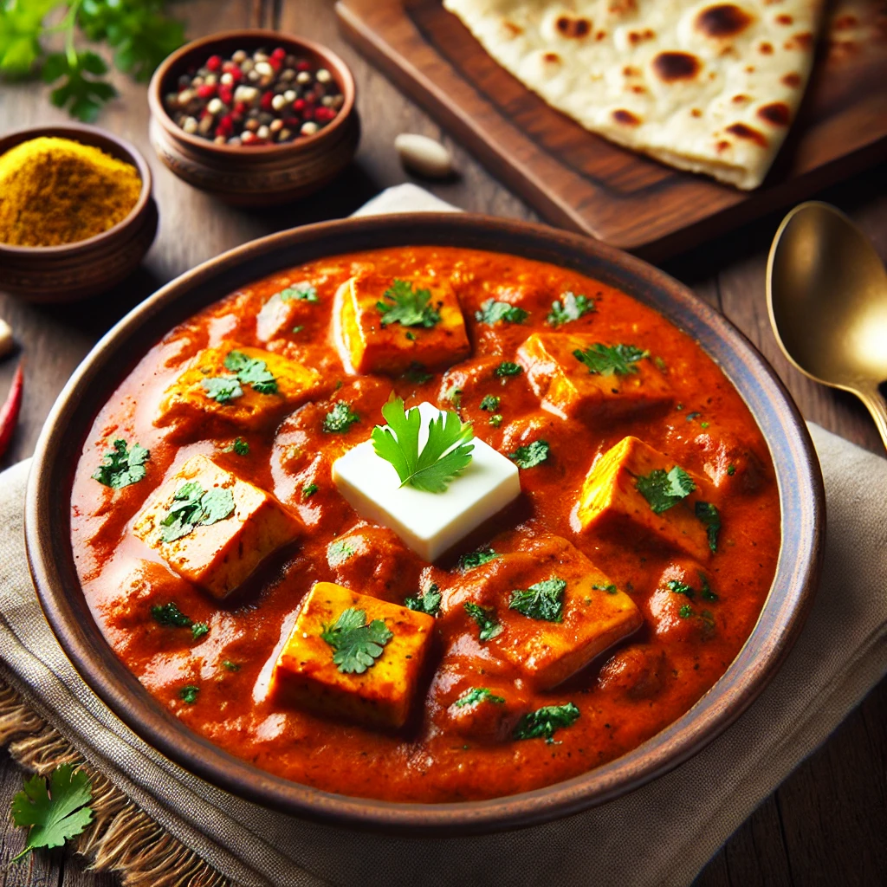

Home
Paneer Butter Masala

Description
Paneer Butter Masala is a rich, creamy, and mildly spiced North Indian dish made with paneer (Indian cottage cheese), butter, tomatoes, cream, and aromatic spices. This restaurant-style dish pairs perfectly with naan, roti, or jeera rice, making it a favorite among vegetarians.
Ingredients
For the Gravy:
- 2 tbsp butter
- 1 tbsp oil
- 2 onions (finely chopped)
- 3 tomatoes (pureed)
- 1 tsp ginger-garlic paste
- 10-12 cashews (soaked in warm water)
- 1 green chili (optional)
- ½ tsp turmeric powder
- 1 tsp red chili powder
- 1 tsp coriander powder
- ½ tsp garam masala
- 1 tsp kasuri methi (dried fenugreek leaves)
- ½ cup fresh cream
- 1 cup water (adjust as needed)
- Salt to taste
For the Paneer:
- 200g paneer (cubed)
- 1 tbsp butter (for sautéing, optional)
Steps
Prepare the Cashew Paste:
- Blend the soaked cahsews with a little water to make a smooth paste. Set aside.
Cook the Gravy:
- Heat butter and oil in a pan. Add chopped onions and sauté until golden brown.
- Add ginger-garlic paste and sauté for a minute until the raw smell disappears.
- Pour in the tomato puree and cook until the oil separates.
Add Spices:
- Stir in turmeric, red chili powder, coriander powder, and salt. Cook for 2-3 minutes.
- Add the cashew paste and mix well. Cook for another 2 minutes.
Blend for a Smooth Gravy (Optional):
- Allow the mixture to cool slightly, then blend into a smooth paste. Strain for an extra creamy texture.
Finish the Gravy:
- Return the blended mixture to the pan, add water, and bring it to a gentle simmer.
- Stir in kasuri methi, garam masala, and fresh cream. Mix well and cook for a minute.
Prepare the Paneer:
- Optionally, sauté paneer cubes in butter for a slight golden crust.
- Add the paneer to the gravy and mix gently.
Final Touch & Serve:
- Simmer for 2-3 minutes, then turn off the heat.
- Garnish with a drizzle of cream and fresh coriander leaves.
- Serve hot with naan, roti, or jeera rice.